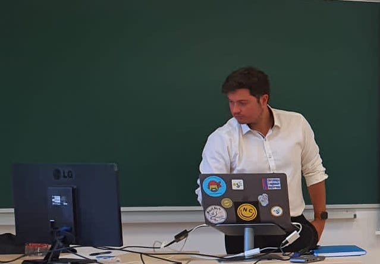

Copyright 2019 Reflux Design
Biography
I am David Chaves-Fraga, assistant professor at Universidade de Santiago de Compostela (USC, Spain). I am also a researcher at the Center for research in Intelligent Technologies (CiTIUS@USC) and research collaborator at the Declarative Languages and Artificial Intelligence Group (DTAI) at KU Leuven, Belgium. I am a former researcher at the Ontology Engineering Group (OEG) at Technical University of Madrid (UPM) where I hold my PhD with my thesis "Knowledge Graph Construction from Heterogeneous Data Sources Exploiting Declarative Mapping Rules" in July 2021. My main research lines are focused on the optimization and evaluation of data integration systems, mainly the construction of Knowledge Graphs from (semi)structured sources using declarative mapping rules.As I really believe that research is a collaborative task, I'm continuously trying to contribute to my research community. For that reason, I'm currently co-chairing the W3C community group for Knowledge Graph Construction, I organize two workshop series (KGC and Sem4Tra) and several tutorials in semantic web conferences about the same topic. Additionally, I have been the main coordinator of Open Summer of Code in Spain from 2018 to 2021, a formative, international, and innovative program for undergrad and master students.

Education
- Ph.D in Artificial Intelligence (2016-2021)
Universidad Politécnica de Madrid, Spain - Master in Articial Intelligence (2015-2016)
Universidad Politécnica de Madrid, Spain - Bachelor in Computer Science (2011-2015)
Universidade de Santiago de Compostela, Spain
Experience
- Assistant Professor (2023-now)
Universidade de Santiago de Compostela, Spain - Senior Researcher (2023-now)
CiTIUS, Spain - Research Collaborator (2022-now)
DTAI (KU Leuven), Belgium - Postdoctoral researcher (2021-2023)
Ontology Engineering Group (UPM), Spain - Main Coordinator (2018-2021)
Open Summer of Code, Spain - Predoctoral researcher (2016-2021)
Ontology Engineering Group (UPM), Spain - Visiting researcher (4 months - 2019)
Scientific Data Management (TIB), Germany - Visiting researcher (3 months - 2017)
Center of Semantic Web Research (UDC), Chile